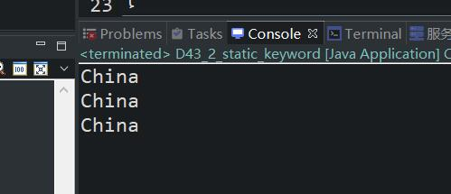

原文连接:https://www.cnblogs.com/ruigege0000/p/11711213.html
一、其他注意点
1.对于带有static的方法，我们讲过需要用“类名.”的方式进行访问，但是其实我们使用“引用.”的方式也是可以进行访问这个方法的举例。
package com.bjpowernode.java_learning;
public class D43_ {
public static void main(String[] args) {
Test3.test3();
Test3 t1 = new Test3();
t1.test3();
}
}
class Test3{
String name;
public Test3() {}
public static void test3(){
System.out.println("我可以执行");
}
}
2.对于上面的特性，为什么这样，我想用下面这个更进一步的例子，也许可以知晓一二了，我们之前讲过空指针异常。
这个空指针异常，是指空引用访问实例相关的数据就是对象相关的数据，这些数据在访问的时候，必须有对象的参与，当空引用的时候，对象是不存在的，访问这些数据就会出现空指针异常。
我们在紧接着上面的程序，再加一段执行程序
t1 = null;
t1.test3();
我们可以看到，即使是空指针，也照样可以执行并没有出现空指针异常，这说明了这里的t1这个对象，我们根本就没用到它，在执行的时候，系统依然会改写为Test3.test3()这样进行执行。
但是这种方式不推荐，虽能执行但不合我们的逻辑。
二、静态变量
1.首先看一段对象创建的代码
package com.bjpowernode.java_learning;
public class D43_2_static_keyword {
public static void main(String[] args) {
Chinese c1 = new Chinese("zhangsan",32,"China");
Chinese c1 = new Chinese("lisi",34,"China");
}
}
class Chinese{
String name;
int id;
String country;
public Chinese(String name,int id,String country) {
this.name = name;
this.id = id;
this.country = country;
}
}
解释：我们创建了两个Chinese对象，他们的国籍都是中国，但是这样我们每次创建都得写一次China，这样就造成了代码的冗余，当我们去掉这个实例变量的时候，场景不合理，还需要这样的属性值，因此我们对于这种对象都共有的属性，引出静态变量的概念。
2.静态变量，也就是在类的代码中，对于实例变量，我们加一个static关键字，代表这个属性是所有创建出来的该对象共有的属性
（1）静态变量在类加载的时候进行初始化，不需要创建对象了，内存就开辟出来了。
（2）静态变量存储在方法区内存。
例子：
package com.bjpowernode.java_learning;
public class D43_2_static_keyword {
public static void main(String[] args) {
Chinese c1 = new Chinese("zhangsan",32);
System.out.println(c1.country);
System.out.println(Chinese.country);
c1 = null;
System.out.println(c1.country);
}
}
class Chinese{
String name;
int id;
static String country = "China";
public Chinese(String name,int id) {
this.name = name;
this.id = id;
}
pubic Chinese() {}
}
个例子可以看出我们访问这个实例变量的时候，可以用"类."访问，也可以用"引用."访问，都成功了,而且原理也和我们上面讲述空指针类似，下面的再几个例子。
package com.bjpowernode.java_learning;
public class D43_2_static_keyword {
public static void main(String[] args) {
// Chinese c1 = new Chinese("zhangsan",32);//这样写报错因为，缺一个参数，即使是提前被定义了
Chinese c2 = new Chinese("lisi",34,"fhai"); //换个值
Chinese c3 = new Chinese("lisi",34,"China");
System.out.println(c2.country);
System.out.println(c3.country);
}
}
class Chinese{
String name;
int id;
static String country = "China";
public Chinese(String name,int id,String country) {
this.name = name;
this.id = id;
this.country = country;
}
pubic Chinese() {}
}

解释：说明即使我们定义了构造函数来修改这种对象里面的country值也修改不了。
（3）总结：
i.static英语的那次翻译为：静态的；
ii.static修饰的方法是静态方法；
iii.static修饰的变量是静态的；
iv.所有的static修饰的元素都称为静态的，都可以使用“类名.”的方式进行访问，当然也可以用“引用.”的方式进行访问（但不建议这么做）
三、源码：
D43_other_anouncements_of_interviewing_object.java
D43_2_static_keyword1.java
D43_2_static_keyword2.java
地址：
https://github.com/ruigege66/Java/blob/master/D43_other_anouncements_of_interviewing_object.java
https://github.com/ruigege66/Java/blob/master/D43_2_static_keyword1.java
https://github.com/ruigege66/Java/blob/master/D43_2_static_keyword2.java
2.CSDN：https://blog.csdn.net/weixin_44630050（心悦君兮君不知-睿）
3.博客园：https://www.cnblogs.com/ruigege0000/
4.欢迎关注微信公众号：傅里叶变换，个人公众号，仅用于学习交流，后台回复”礼包“，获取大数据学习资料